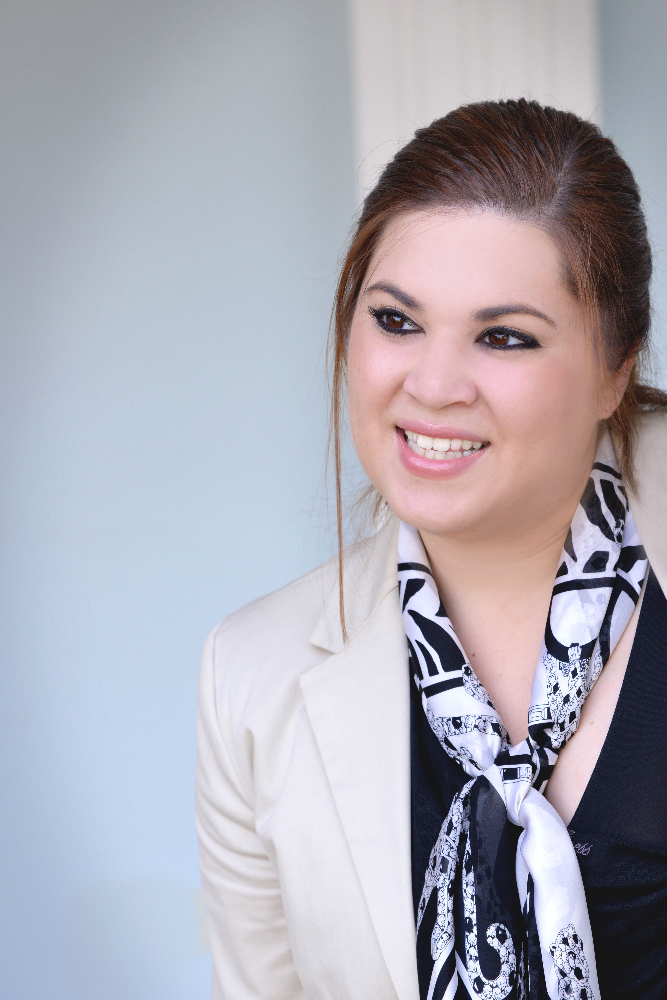
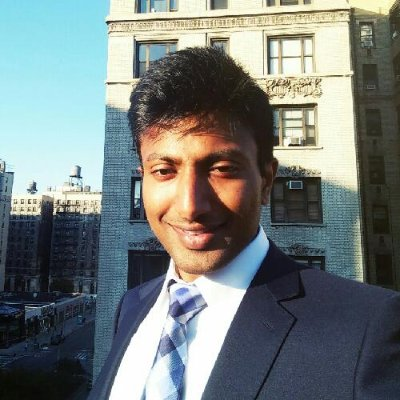
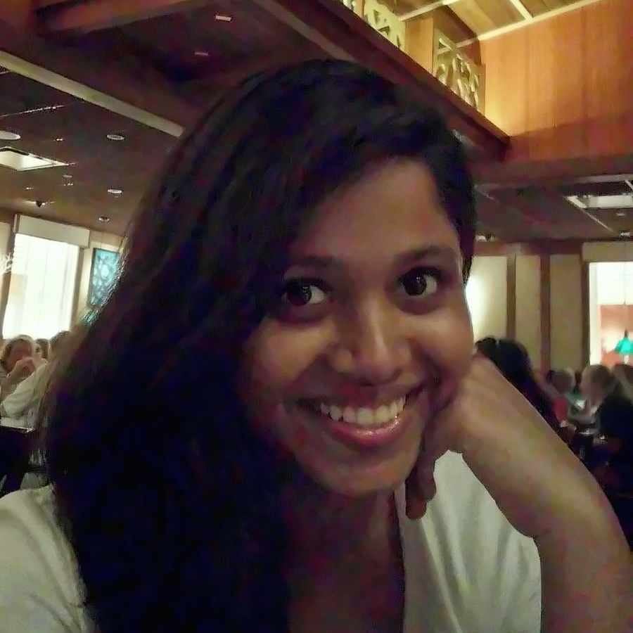

Christina Papadimitriou
Please describe any relevant past experience
I have held multiple leadership positions at student organizations in the past including:
President, American Institute of Chemical Engineers (AIChE), University of South Carolina, 2013 – 2014
· Presided over 120-member student organization with $11,000 budget
· Facilitated corporate sponsorships and initiated a mentorship program between senior/junior and freshmen students
ChemE Car Team Captain, American Institute of Chemical Engineers (AIChE), University of South Carolina, 2014
· Re-started the ChemE Car program at the University of South Carolina with a team of 6 students
Vice-President of Projects, Tau Beta Pi Engineering Honor Society, University of South Carolina, 2013 – 2014
· Organized professional, social and service activities for a 60-member academic honor society
Social Committee Chair, Theta Tau Professional Engineering Fraternity, University of South Carolina, 2014
· Organized social events for a 90-member professional engineering student organization
Recruitment Committee Chair, Theta Tau Professional Engineering Fraternity, University of South Carolina, 2013
· Recruited the largest new member class in chapter history, increasing membership by 31%
Vice-President, American Institute of Chemical Engineers (AIChE), University of South Carolina, 2012-2013
What are your goals/vision for your committees of choice? How do you think you can contribute to them?
My goals and contributions to each of my committee choices are listed here:
Alumni Affairs
- Help maintain communication with alumni
- Create an alumni newsletter and organize networking events with alumni (1-2 per semester) (e.g. alumni panel, alumni mixer). Try to host events off campus at venues that are downtown and closer to where the alumni work in order to increase attendance. (e.g. Empire Hotel Rooftop)
- Facilitate an effective way (via an online network) for the current students to communicate with alumni to help with their professional development
Career Development
- Organize a signature recruiting event (e.g. networking dinner) among corporate organizations (including alumni) and students to help students obtain employment opportunities.
Social
- Help the committee chair organize social events for the engineering graduate student.
- Research new venues and come up with new ideas for events.
- Request funding for the events from the available resources so the students that attend pay the minimum amount possible
- Help organize events of big capacity so students are not left out on the waitlist
Any other information you would like to share
I am really excited to add value to the EGSC and if I am given the opportunity to be a Department Representative I will make the most out of it and contribute in any way possible.
Please describe any relevant past experience
I have a strong passion for organizing things, getting them done well and on time.
- In school I co-founded many clubs that had either educational or social value. For instance a club that funds social school projects in Brazil and Mozambique. I headed many clubs and learned a lot about relations (to our people in those countries) and gained organizational skills.
- I was in charge of our high school's graduation ball/prom's organization for 700 people. That implied a project of 3 years (venues have to be reserved way ahead for those kind of school celebrations) and included to work on different subprojects such as the night's logistics, program, budget, entertainment etc.
- I have been heading and managing the youth commitee at a local parish for 8 years now. I am responsible for 8 members, our program portfolio, budget,
- I am a volunteer at One-to-World. I lead workshops for underprivileged children and youth to educate about international cultures, global problems and topics in NYC.
- In college, I mentored first-year and international students which required a lot of pre- and after-arrival work as well.
Also in college, I co-organized the Konaktiva 2010 student fair where I coordinated the fair logistics for different companies
Besides all those volunteering experiences, I did internships and worked in the manufacturing industrie, consulting and research where I learned a lot about how to organize things and how to improve them as well as how and why to charish team work.
If you need any references or more information, feel free to contact me.
What are your goals/vision for your committees of choice? How do you think you can contribute to them?
Any organizations benefits from their relations and network and eventually needs to think and organize itself within a budget in order to be profitable or at least not lose money.
I am eager to help EGSC with their alumni affairs and/or budget. Knowing how important networking it is, we have to assure for future generations of Columbia graduate students to have the best possible pool of alumni in order to use any available ressource the school has ever contributed to (learn from former students, their experiences and also mistakes). Making contacts is easy, maintaining relationships is the hard part. So we want to make sure that both Alumni and students benefit from those relationships - I want to contribute to that!
As for the budget: Besides using the school's ressource I could imagine fostering, building and (again) maintaining relationships to possible sponsors in order to provide the opportunity of great, unforgtable events that in my opinion definitely are part of a Columbia experience.
Any other information you would like to share
I am really well organized and passionate about such responsibilities as the one offered by EGSC. I am happy to be able to apply and would love any opportunity to get in touch with you and be part of the team.
Please describe any relevant past experience
I have majored in Electrical Engineering at McGill University, Montreal. During my undergraduate education, I was an undergraduate course assistant for 2 years, for the courses Advanced Calculus for Engineers & Intermediate Calculus. I have
reviewed class material for 90 students every week, proctored exams and graded assignments and I Was awarded with Tomlinson Teaching Award for outstanding performance. I also was a private tutor for Probability and Random Signals Tutor, at McGill tutorial services.
What are your goals/vision for your committees of choice? How do you think you can contribute to them?
I
Please describe any relevant past experience
During my time at Cooper Union, I had the opportunity to be the President of the Finance and Investment Club for my junior and senior years. This was a great learning experience for me; one in which I managed the club’s schedule of events, delegated work among club officers, and most importantly, collected feedback from club members and adjusted our focus according to their interests. Based on this experience, I feel that I have learned the leadership skills necessary to be an effective student advocate as an IEOR Department Representative.
What are your goals/vision for your committees of choice? How do you think you can contribute to them?
I am interested in both the Academic Affairs Committee, where I could work on tasks like the Student Survey, and in the Budget Committee where I could help with funding student groups and events. One goal that I would have for the Academic Affairs Committee would be to have a near 100% participation rate from the IEOR department in the annual Student Survey. I would talk with all of my classmates and encourage them to share their points of view to make the survey more representative of IEOR students’ Columbia experience.
Any other information you would like to share
After studying at a small school like Cooper Union, I have come to love the feeling of a close-knit community in this large city. It was a place where everyone knew each other as soon as you entered the school, and where you could not only share your ideas with students and faculty, but you could see students’ ideas translated directly into school wide changes. I would like to bring this experience with me to Columbia as a Department Representative for IEOR. As a Department Representative I would clearly and respectfully convey the thoughts of our department to the EGSC. I would be honored to be chosen for this role, and I thank you for your consideration.
Please describe any relevant past experience
I have previous experience in representing students at my undergraduate institutions, and I co founded an musical association there. I organized and coordinated several events at my previous institutions, such as hackathons, social events, career fairs etc..
What are your goals/vision for your committees of choice? How do you think you can contribute to them?
Being an international student, I believe I could bring a lot to the alumni network, by helping it grow outside the US, especially in Europe. I would like to represent the diversity that we enjoy at Columbia, and make sure that wherever the students are, they can count on a reliable and helpful alumni network.
More specifically I believe students are not enough well informed about the possibilities offered by the alumni network, especially outside of the U.S.

Mohnish Prasanna Palanisamy
Please describe any relevant past experience
I was the department president in my undergraduate college in my senior year. I was responsible for organizing symposiums, events, guest lectures and workshops for students.
I was also the class representative for two years for the department.
What are your goals/vision for your committees of choice? How do you think you can contribute to them?
I would have to first learn about the responsibilities of each of the committees before I can comment on this question. But in general I would like to make the EGSC a bridging platform for graduates. In my opinion sports is the best networking and team building event and so I would start by organizing inter department sports festivals
Please describe any relevant past experience
I took active part in campus activities and, in the first year, managed several events very successfully in ‘MELANGE’-our national level annual social-technical-cultural fest. This resulted in my appointment as the head of the ‘Compering Committee’ in the second year. I selected my team of comperes and helped them polish their natural talent for extempore speech, stand-up comedy and repartee. For leadership and team building skill so proved, the faculty appointed me the ‘Secretary for Sound’ for the Student’s Council 2013-2014. I worked creditably in providing appropriate sound systems for every kind of program from live concerts to guest lectures and learnt much about complex planning, raising and managing finance, dealing with outside service contractors, assigning tasks to colleagues and volunteers, etc. As a result of this successful tenure and gruelling forty-five-minute interview by ten of the highest College authorities, I was unanimously appointed as the ‘University Representative’- Head of theStudent’s Council for the year 2014-2015. In that post, I orchestrated the team to raise funds worth INR 3.2 million for a live-concert and technical, social and cultural events, initiated schemes as ‘Special Guidance’ and ‘Earn and Learn’ for the benefit of students and guided the Socials Team in providing a platform for aspiring social entrepreneurs with the help “Ignited Innovators of India” program, helped them conduct blood donation and eye donation camps and promoted computer literacy in senior citizens.
What are your goals/vision for your committees of choice? How do you think you can contribute to them?
It is my first month at Columbia but I can hit the ground running and come up with innovative ideas for the smooth functioning of the committee once I am briefed about the functioning. I’m not only used to wearing many hats, I sincerely enjoy it.
Please describe any relevant past experience
During my second year of undergraduate, I was one the representative of the students at the administration council of my school for a year. I learned how to carry and support the voice of my fellow. As a French Army officer, I was able to be responsible for a project and a team. In particular I was the leader of a squad of 31 first-year students for a month, in charge of their military basic training. I also have strong team-spirit, developped while being member of the sailing crew of my engineering school.
What are your goals/vision for your committees of choice? How do you think you can contribute to them?
I think that the Social Committee is one of the best way to gather the students of the Engineering school and it was amazing to see all the activities organized. I think I can be useful to this Committee as I am familiar wih carrying events and find new ideas. And you can trust French people when social events, parties and food are concerned
Please describe any relevant past experience
I have been the department representative of my batch during my undergrad for 4 years. Have served as an intermediary between teachers and students. Helped serve my fellow classmates solve problems regarding academic and other issues.
What are your goals/vision for your committees of choice? How do you think you can contribute to them?
Being a person who loves to talk and make connections quickly, I believe that during my tenure as a DR I can help my fellow graduate students get introduced to several alums. This is help them build their network and develop professional goals. My goal would be to set up coffee chats for students with the alums of their industry. Apart from that, during socials I would make an effort to get them to be a part of it as well.
Organizing exciting mixers for 1st and 2nd year graduate students.
Help EGSC form a collaboration with CCE, to help graduate students edit their resumes, undergo mock interviews etc.
Any other information you would like to share
Currently leading the Operations Consulting Project in our team for three clients based in New York City.
Core Committee Member of various clubs including Health Club and English Literary Association during Undergrad .
Helped organize national level events in school where students from different universities across the country participated.
Please describe any relevant past experience
I have been captain of the mens rugby team and an active member of the Tau Beta Pi chapter at Texas Tech University.
In addition, I am collaborating as a member with the Columbia Association of South American Students(CASAS) where I will be in charge of organizing this semester's SEAS Soccer Tournament.
I am hoping to become a Board member of the CASAS board too.
What are your goals/vision for your committees of choice? How do you think you can contribute to them?
I would like to connect and bring back international alumni to the school. I truly believe that their insights could help a lot to current studies at Columbia. Many people, just like me and my peers, who do not hold U.S. Citizenship have lots of questions when it comes to finding employment opportunities. It would be great to have the alumnus opinion and experience on these matters.

Shikha Elizabeth Joseph
Please describe any relevant past experience
While at my undergraduate University in India, I was an active member of the Student Council for three years. I was the head of the Academic Committee for 2 years, of which for one year (2012-2013), I was the convener of the main Academic Council with Faculty and Students. I was the Finance Head of the School Newspaper and I was instrumental in bringing out a charter so as to privatize publishing of newspaper articles for which we raised around 1000$ seed money. Finally, through the Student Council I was elected to be the Sponsorship Head for our College Festival for 3 years in a row. As part of my duties, I along with my team raised over 50,000$ towards our Sponsorship fund.
What are your goals/vision for your committees of choice? How do you think you can contribute to them?
As a member of the Alumni Affairs committee I would like to ensure smooth transitioning of current students when they graduate and become Alumni, so as to expand our active network. Maintaining a strong connect with alumni is imperative. More so, I am of the staunch opinion that accessibility is something that defines us as students of Columbia and that should not fade when one graduates. I consider it my duty to assist any alumni by connecting them to the right authorities should they require help of any sort. Finally, I would like to start Mentorship programs for current students where willing Alumni could take in 3 to 5 students as their 'mentees' and that will help in fostering our growing community.
As a member of the Career Development committee I would again like to start the mentorship program wherein we could go to alumni and other professionals who would be willing to mentor 3 to 5 students. I would also like to assist the Career Service in any which way possible to ensure efficient career development for students. Apart from the plethora of Employer Presentations and Career Talks I would not consider this committee to be mutually exclusive from the alumni affairs committee and I would like to see the two committees collaborating in several activities.
As a member of the Academic Affairs Committee, my main focus would be on 'effective communication'. I would like to serve as a medium to bridge the gap between students and others. By ensuring that concerns voiced are channeled and acted upon, I would like to help everyone enrich their Academic Experience at Columbia.
Any other information you would like to share
More than being a part of a single committee I would like to just be an active member of the Student Council. I will contribute to any committee regardless, to the best of my abilities.
Please describe any relevant past experience
My Leadership skills stem from my former Model UN experience.
I have organised 4 Model UN Conferences, heading them as secretary general, with a turnout of 200-300 members each.
These conferences have been organised across 4 different cities, and I have worked in leading teams of marketing, heading teams from 3-12 members and marketing our event across 14 cities on online and offline media platforms.
I have organised Leadership workshops in underprivileged schools and engineering colleges in India with a turnout of over 200 students and have been the chief trainer for these workshops.
I have considerable experience working with multinational and multiethnic teams at Model UNs including but not limited to Harvard Model UN and Model UN of the Hague, University of Leiden.
I have also led successful panels on various topics of debate at over 20 colleges in India as an organiser and a presenter.
What are your goals/vision for your committees of choice? How do you think you can contribute to them?
Budget:
For the Budgetary committee, I would hope to ensure that the amount students have to pay to attend events is reduced while keeping an optimum operating budget for the EGSC. I am hoping my background in OR will come in handy for this.
Alumni Affairs:
I would hope to create more interactive platforms between the alumni and the present students, including activities which would see closer interaction between the two.
Any other information you would like to share
I have been an organiser of various events ranging from Anti Sexual Harrasment street protests to having worked for an event management firm back in India, to organise workshops and seminars.
Please describe any relevant past experience
VIT University Quiz Club – President
- Promoted quizzing as an engaging mind-sport among the university students; grew the club to 50+ members.
- Planned 24 campus-wide and international quizzing events, including monthly quiz competitions, thematic quizzes, and an international quiz festival.
Bank of America Merrill Lynch - Senior Technical Associate
Lead teams of 4-6 on tech projects
What are your goals/vision for your committees of choice? How do you think you can contribute to them?
Fostering inter-school student collaboration for the greater good. I will spearhead the academic and projects alliance of SEAS with other Columbia schools.
Please describe any relevant past experience
Throughout my undergraduate career, I had always actively engaged on campus, and overall I have had three experiences serving at the management level in three different organizations.
During my freshman year in college, I served as an assistant in the liaison department of an undergraduate engineering student council. While on that position, I successfully helped the organization raise funds for all different kinds of activities as well as strengthened our connection with other organizations on campus. In addition, I had also worked as a treasurer for another engineering club and a vice president of education for a real estate club in the following years until graduation. Both of the two later clubs were first new on campus, so I worked as one of their founding members at the same. In just over a year of time, we greatly increased the membership of the real estate club through a number of efforts to raise the student body’s awareness of our club. For the other engineering club, I spearheaded and completed a merger with a nationally chartered organization (AIAA) together with the other executive board members.
What are your goals/vision for your committees of choice? How do you think you can contribute to them?
Working as a member of the Interschool Committee, I will assist the chair of the committee in maintaining as well as strengthening EGSC’s relations with the variety of organizations from different schools. I will constantly reach out to those organizations to seek for opportunities our students in SEAS can take advantage of. Since relationships are always mutual, I will also try to work closely with the Social Committee and advocate any opportunities we may have for them at all times. As important as building bridges across schools, further raising the students’ awareness of our organization in different departments within SEAS is an effort I will try to make as well.